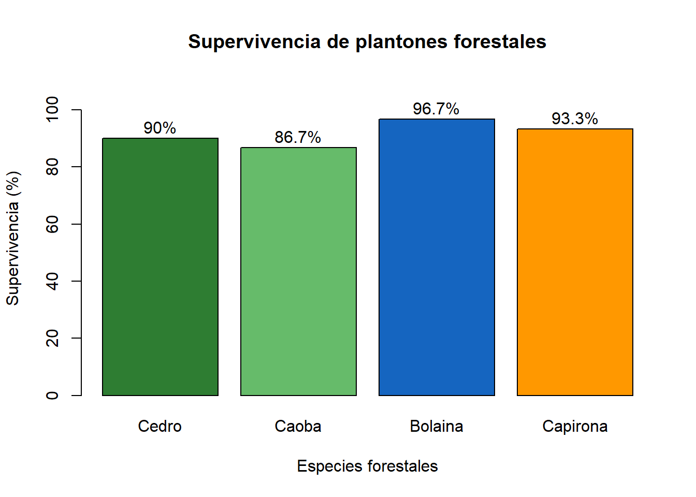
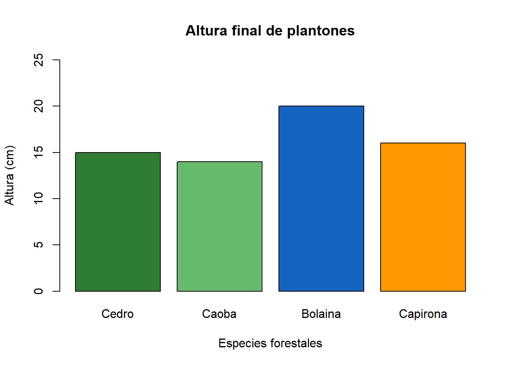
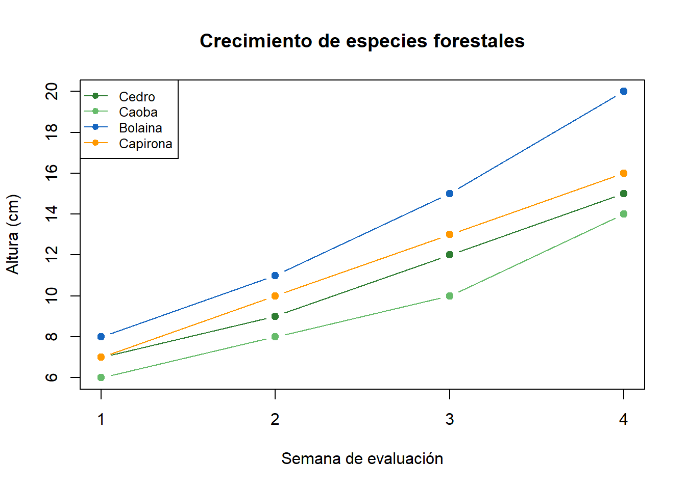

| Especie | Plantones iniciales | Plantones vivos | Altura final (cm) | Supervivencia (%) |
|---|---|---|---|---|
| Cedro | 30 | 27 | 15 | 90.0 |
| Caoba | 30 | 26 | 14 | 86.7 |
| Bolaina | 30 | 29 | 20 | 96.7 |
| Capirona | 30 | 28 | 16 | 93.3 |
Evaluación del Crecimiento de Plantones Forestales
Monitoreo de especies producidas en vivero
1 Bienvenidos
Esta página presenta una demostración del seguimiento del crecimiento y supervivencia de plantones forestales en condiciones de vivero.
El trabajo fue elaborado utilizando RStudio y Quarto, herramientas que permiten organizar información y presentar resultados mediante tablas y gráficos.
2 Introducción
Los viveros forestales son importantes porque permiten producir plantones que posteriormente pueden utilizarse en actividades de reforestación y recuperación de áreas degradadas.
Durante la producción de plantones es necesario observar su crecimiento, supervivencia y desarrollo para conocer su comportamiento en el vivero.
3 Objetivos
3.1 Objetivo general
Evaluar mediante datos de ejemplo el crecimiento y la supervivencia de diferentes especies forestales.
3.2 Objetivos específicos
- Comparar el crecimiento de cuatro especies forestales.
- Calcular el porcentaje de supervivencia.
- Elaborar tablas y gráficos utilizando RStudio.
- Interpretar los resultados obtenidos.
4 Metodología
Para esta demostración se consideran cuatro especies forestales:
- Cedro
- Caoba
- Bolaina
- Capirona
Se supone que inicialmente se instalaron 30 plantones por especie.
Los datos son simulados y se utilizan únicamente para demostrar el funcionamiento del análisis.
5 Registro de datos
6 Resultados
6.1 Tabla de evaluación
En la siguiente tabla se presentan los resultados simulados de supervivencia y altura final de los plantones.
6.2 Gráfico de supervivencia
Este gráfico compara el porcentaje de plantones que permanecieron vivos durante el periodo de evaluación.

6.3 Comparación de alturas
A continuación se presenta un gráfico de barras para comparar la altura final de las especies.

7 Evaluación del crecimiento
Para ilustrar el crecimiento durante cuatro semanas, se utilizarán los siguientes valores simulados.
| Semana | Cedro | Caoba | Bolaina | Capirona |
|---|---|---|---|---|
| 1 | 7 | 6 | 8 | 7 |
| 2 | 9 | 8 | 11 | 10 |
| 3 | 12 | 10 | 15 | 13 |
| 4 | 15 | 14 | 20 | 16 |
7.1 Gráfico de crecimiento semanal

8 Interpretación de resultados
Según los datos simulados, la bolaina presentó la mayor altura final, alcanzando 20 cm en la cuarta semana.
Asimismo, esta especie registró una supervivencia aproximada de 96.7%, mientras que la caoba obtuvo el menor porcentaje de supervivencia.
Estas diferencias permiten observar cómo se pueden comparar especies forestales utilizando herramientas estadísticas sencillas.
9 Conclusiones
El seguimiento de los plantones permite conocer su crecimiento y supervivencia durante la producción en vivero.
Las tablas y gráficos realizados en RStudio facilitan la comparación de los resultados entre especies forestales.
Quarto permite presentar los resultados de manera organizada mediante una página web accesible desde internet.
10 Nota final
Los datos utilizados en esta página son ejemplos simulados con fines educativos. No corresponden a una evaluación experimental real.